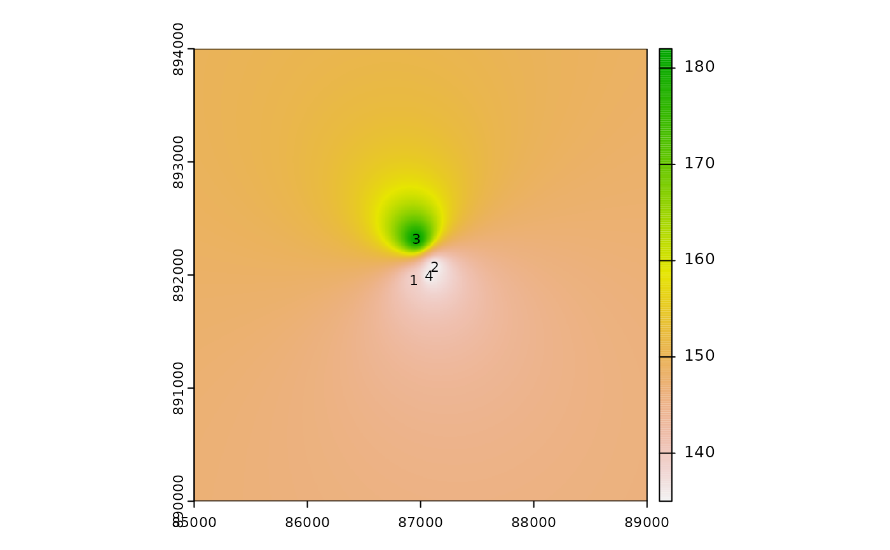

This function provides an interface mirroring that of the GDAL
command-line app gdal_grid. For a description of the
utility and the arguments that it takes, see the documentation at
https://gdal.org/programs/gdal_grid.html.
Usage
gdal_grid(
src_datasource,
dst_filename,
...,
ot,
of,
txe,
tye,
tr,
outsize,
a_srs,
zfield,
z_increase,
z_multiply,
a,
spat,
clipsrc,
clipsrcsql,
clipsrclayer,
clipsrcwhere,
l,
where,
sql,
co,
q,
config_options = character(0),
dryrun = FALSE
)Arguments
- src_datasource
Character. Path to a GDAL-supported readable datasource.
- dst_filename
Character. Path to a GDAL-supported output file.
- ...
Here, a placeholder argument that forces users to supply exact names of all subsequent formal arguments.
- ot, of, txe, tye, tr, outsize, a_srs, zfield, z_increase, z_multiply
See the GDAL project's gdal_grid documentation for details.
- a, spat, clipsrc, clipsrcsql, clipsrclayer, clipsrcwhere
See the GDAL project's gdal_grid documentation for details.
- l, where, sql, co, q
See the GDAL project's gdal_grid documentation for details.
- config_options
A named character vector with GDAL config options, of the form
c(option1=value1, option2=value2). (See here for a complete list of supported config options.)- dryrun
Logical (default
FALSE). IfTRUE, instead of executing the requested call to GDAL, the function will print the command-line call that would produce the equivalent output.
Examples
# \donttest{
## Set up file paths
td <- tempdir()
dem_file <- file.path(td, "dem.csv")
vrt_header_file <- file.path(td, "tmp.vrt")
out_raster <- file.path(td, "tmp.tiff")
## Create file of points with x-, y-, and z-coordinates
pts <-
data.frame(Easting = c(86943.4, 87124.3, 86962.4, 87077.6),
Northing = c(891957, 892075, 892321, 891995),
Elevation = c(139.13, 135.01, 182.04, 135.01))
write.csv(pts, file = dem_file, row.names = FALSE)
## Prepare a matching VRT file
vrt_header <- c(
'<OGRVRTDataSource>',
' <OGRVRTLayer name="dem">',
paste0(' <SrcDataSource>',dem_file,'</SrcDataSource>'),
' <GeometryType>wkbPoint</GeometryType>',
' <GeometryField encoding="PointFromColumns" x="Easting" y="Northing" z="Elevation"/>',
' </OGRVRTLayer>',
'</OGRVRTDataSource>'
)
cat(vrt_header, file = vrt_header_file, sep = "\n")
## Test it out
gdal_grid(src_datasource = vrt_header_file,
dst_filename = out_raster,
a = "invdist:power=2.0:smoothing=1.0",
txe = c(85000, 89000), tye = c(894000, 890000),
outsize = c(400, 400),
of = "GTiff", ot = "Float64", l = "dem")
## Check that it works
if(requireNamespace("terra", quietly = TRUE)) {
library(terra)
plot(rast(out_raster))
text(Northing ~ Easting, data = pts,
labels = seq_len(nrow(pts)), cex = 0.7)
}
#> terra 1.7.39

# }